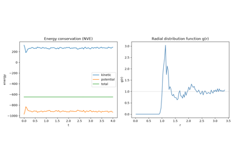
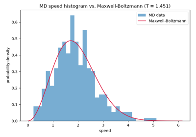
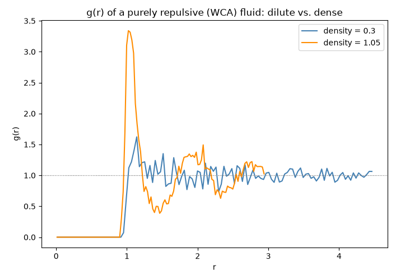
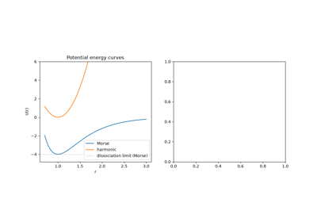
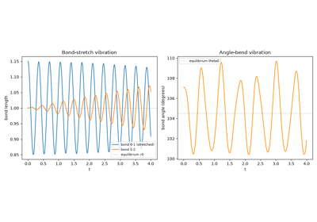
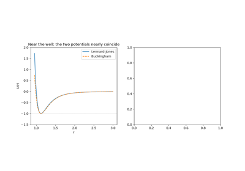
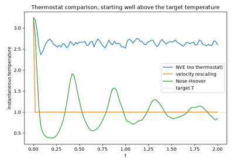

Examples#
This gallery walks through every public feature of chemistrykit.md:
the Lennard-Jones fluid in reduced units (energy conservation, pressure,
and the radial distribution function g(r)); Morse/Buckingham/harmonic
bonded potentials and small bonded clusters; and velocity-rescaling and
Nose-Hoover thermostats.
Each script in this gallery is self-contained and can be run directly with
python examples/md/<section>/<script>.py. Every script also carries an
RST module docstring as its title/description and uses # %% markers to
split narrative text from code, which is exactly what Sphinx-Gallery
renders into the pages below – the script is the source of truth for
what you see, not a copy of it.
Sections#
lj_fluid – an NVE Lennard-Jones fluid run: energy conservation, the radial distribution function g(r), a cross-check of the simulated speed distribution against
chemistrykit.statmech’s Maxwell-Boltzmann distribution, and a purely repulsive (Weeks-Chandler-Andersen) fluid showing packing-driven positional order at high density.pair_potentials – Morse vs. harmonic bond potentials, the classical vibration of a two-body
DiatomicOscillator, and a small bonded molecule vibrating under coupled harmonic bond-stretch and angle-bend terms.thermostats – comparing an unthermostatted (NVE) run against velocity-rescaling and Nose-Hoover temperature control.
Lennard-Jones fluid#
An equilibrated NVE Lennard-Jones fluid: energy conservation, the radial distribution function g(r), a cross-check of the simulated velocity ensemble against the Maxwell-Boltzmann speed distribution, and a purely repulsive (Weeks-Chandler-Andersen) fluid illustrating packing-driven positional order at high density.

An NVE Lennard-Jones fluid: energy conservation and g(r)

Cross-checking an MD trajectory against the Maxwell-Boltzmann distribution

Purely repulsive (WCA) particles: packing order without attraction
Pair potentials#
Morse vs. harmonic bond potentials, the classical vibration of a two-body diatomic oscillator, and a small bonded molecule vibrating under coupled harmonic bond-stretch and angle-bend terms.

Morse vs. harmonic bond potentials, and diatomic bond vibration

A bent triatomic molecule: coupled bond-stretch and angle-bend vibrations

Buckingham vs. Lennard-Jones: exponential repulsion and its inner turnover
Thermostats#
Comparing an unthermostatted (NVE) Lennard-Jones fluid run against velocity-rescaling and Nose-Hoover temperature control.

Thermostats: NVE vs. velocity-rescaling vs. Nose-Hoover